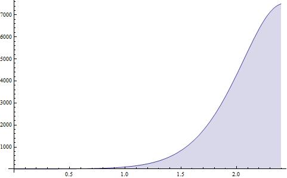

相对论心理学1
[恶搞]相对论心理学系列：
[Update:03-21]
Actually, I am joking! DO NOT PANIC!
本文弃用cc by-nc 2.5协议。All rights reserved. 不许转载。因为文章还没成型，我只是把我的所有的尝试都写在这里。而且，记着所有这些都是a joke。本文将已经完成于2200AD。
第一章 问题的引入
生平最恨不幸的故事入耳。
幸与不幸，我没有评判标准，所有的测量全部需要在故事主人公的参考系进行。在故事主人公的情感与观者的情感无冲突的情况下，主人公的情感就仅仅是一个标量，故事主人公自身参考系中当时当地的幸，任何平移下都不变。然而，为了描述故事主人公的幸与不幸，我们需要找出能够代表某种情感的可以量化的参量，一般此参量是特定情感下的所有的人共有的一种可以度量的表现，或者故事主人公所特有的一种表现。比如下面在分析爱情的时候所采用的其他观者远离自己的快慢程度（自己与其他观者的有效交流的多少）乘以其他观者的弥散程度（其他观者对于自己的重要程度）。
有两件事情可能是非常复杂的。
其一是存在耦合的情况。如果故事主人公的感受是与其他观者耦合的时候。这种情况往往会导致无穷递归的情况。倘若也是下面将要提到的含时的情况，那么还可能会出现混沌的情况。这部分情况需要以后进行细致讨论。
其二是含时的测量。举例来说，一个当地观者想要观测自身参考系中的爱情感受进行描述。由于心理学的相对性原理，人所感受到的时空背景不仅仅与物理的时空有关，还与观者自身的情感状况（情感密度和情感的物态方程）有关，于是感受的强烈程度会导致心里时空背景的扭曲。这部分可以通过场方程来描述。
\begin{align}
G_{ab}=GT_{ab}
\end{align}
其中，\(G_{ab}\)是描述时空背景的张量；\(T_{ab}\)是描述感受的张量；而有趣的是标量\(G\)，它描述了情感密度对心里时空的影响的程度，在经典近似下，可以看作情感密度与心里时空扭曲标量的比值。
为了方便对事件的描述，我们引入conformal time的概念。conformal time就是指的观者在某情感状态下的心理时间。这个量并没有可用的明确定义，所以在使用之前需要实现定义。比如我们一般喜欢定义当前情感状态下的时间为conformal time，记作\(\tau(t)\)。括号里面的变量意味着这个因子是与心理时间相关的。这样的话，对于一个含时的问题的描述，我们需要引入因子a，心理时间与conformal time之间的换算关系为\(t=a\tau\)。
实验上，我们可以通过下面的定义来给出\(a\)。
\begin{align}
H(t)=\frac{\mathrm d a/\mathrm d t}{a}
\end{align}
其中，\(H(t)\)是心理弥散常数。从定义可以看出，\(H(t)\)的意义是，在观者自身参考系所观测其他观者时，所测量到的其他观者远离自己的快慢程度和其他观者的弥散系数的合作用的结果。其他观者远离观者的速度越快，\(H(t)\)就越大；其他观者相对与观者的弥散程度越大，\(H(t)\)就越大。
我来解释一下其他观者远离自己的快慢程度。这个常常被描述成主人公远离其他人的速度，在我们这里，因为所有的观测必须先在故事主人公的参考系完成，所以这样描述是不太方便的。其他观者远离自己的速度应该怎么描述呢？我们需要引入红移，即redshift。Redshift是描述观者在接收到其他观者的一个试探(probe，可能是一个问题，一个碰触，总之是某种意图引起故事主人公注意的行为)之后，给出回应（respond）并最终接受到其他观者能够证明已经接受到该回应的回应的这个过程所需要的时间，这个时间是用心理时间来衡量的。这样来说，其实红移并不是一个很方便测量的量。为了能够测量，我们需要将这个过程所需的心理时间归一化，归一化常数就是在前面选定confomal time时所选定的那个作为标准的情感状态下这个过程所需要的时间的倒数，并且为了以后更好用，还要减去1。即，
\begin{align}
z=\frac{t_a}{t_0}-1
\end{align}
另一个需要给出解释的量是弥散系数。上面提到的红移并不能完整的描述故事主人公的情感密度对心理时空引起的影响。举个例子来说，如果有一个观者都离故事主人公很近，即\(z_0\)很小，但是因为这个观者是临时过来的，只是因为工作或者什么原因才临时过来待几天，这几天过去之后，该人物就会离去。这个观者的离去与那种朋友离去的情况完全不同，所以我们需要引入一个参数来描述每个人的重要程度，称之为弥散程度\(s\)。
解释清楚了这两个概念，那么如何用来这两个量来描述前面的心理弥散常数呢？我们定义这个量如下：
\begin{align}
H(t)=-\frac 1 t \ln{s(1+z)}
\end{align}
做一个简单的变换，可以得到红移量、弥散系数以及conformal time的标度因子\(a\)之间的关系：
\begin{align}
s(1+z)=\frac1 a
\end{align}
为了便于理解，我们将会给出一张描述爱情的图表作为示例。

< 2011-03-21>

{kind=link}
终于可以用douban登录了。。
顺便报告几个bug ，登录之后的顶上的菜单条头像和名字尺寸好大。。可能是chrome的问题。
$ $环境貌似mathjax读不了？还是又是chrome的问题。。。
BTW。。这文真DT。。。我好期待它的结论～
不是chrome的问题啊，是wordpress的问题啊，它自己加载一个64*64甚至更大的logo啊，有木有啊！！！！！
~我很讨厌那个bar，一直想改成默认关掉，但是没这个选项，代码也没看到……有木有啊！！！！！！
$$确实读不了啊，因为我之前改过mathjax的设置了，忘记了……mathjax有1.1了，但是我不敢升级，因为涉及到太多地方了……
“conformal time就是指的观者在某情感状态下的心理时间。” && “心理时间与conformal time之间的换算关系为t=aτ”
这两句有问题吧？还是我没理解？
然后，期待后续，别坑了……
没有问题啊，心理时间是与情感状态有关的，conformal time只是指的某情感状态下的心理时间。这个换算关系给出了任意心理时间换算成某情感状态下的心理时间的方法。
Pingback: 相对论心理学2星辰忆梦 | 星辰忆梦